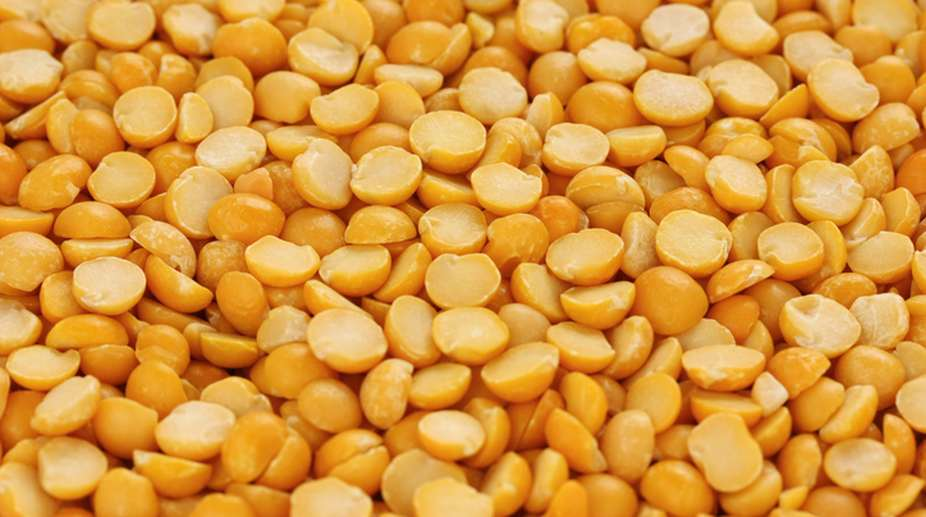

तूरडाळ विषयी माहिती

प्रस्तावना
खरीप हंगामामध्ये तूर हे अतिशय महत्त्वाचे पीक आहे. या पिकाला २१ ते २५० से.ग्रे.तापमान चांगले मानवते.
महाराष्ट्रामध्ये १० लाख हेक्टर पेक्षा अधिक क्षेत्रावर तूर हे पीक घेतले जाते.
जमीन
मध्यम ते भारी पाण्याचा उत्तम निचरा होणारी जमीन तुरीसाठी फार चांगली. चोपण, पाणथळ जमिनीत तूर चांगली येत नाही.
कसदार, भुसभुसीत, पोयट्याच्या जमिनीत सुद्धा तूर चांगली येते. साधारणत: ६.५ ते ७.५ सामू असलेली जमीन या पिकास योग्य
असते.
पूर्वमशागत
रबी हंगामाचे पीक निघाल्यानंतर चांगली खोल नांगरट करावी आणि उन्हाळ्यात जमीन चांगली तापू द्यावी. त्यामुळे जमिनीतील
किडी, अंडी व कोप इ. नष्ट होतात जमीन चांगली तापल्यामुळे सच्छिद्रता वाढते. अन्नद्रव्ये मुक्त होतात आणि जमिनीचा पोत
सुधारतो.
पेरणीची वेळ
जूनच्या दुस-या पंधरवड्यात पेरणी करावी. पेरणी जसजसी उशिरा होईल. त्याप्रमाणे उत्पादनात घट येते. यासाठी १०
जुलैपूर्वी पेरणी करावी.
पेरणीची पध्दत.
तूर हे पीक बहुतांशी म्हणून घेतले जाते. तूर + बाजरी (१:२) तूर + सूर्यफूल (१:२), तूर +सोयाबीन (१:३ किंवा १:४) तूर
+ ज्वारी (१:२ किंवा १:४), तूर +कापूस, तूर + भूईमूग, तूर+मूग, तूर+उडीद (१:३) अशाप्रकारे पेरणी केल्यास दोन्ही
पिकांचे उत्पादन चांगले येते. तूरीचे सलग पीक सुध्दा चांगले उत्पादन देते.
पेरणीचे अंतर
सलग पीक घ्यावयाचे असल्यास आय.सी.पी.एल-८७ या वाणाकरीता ४५ X १० सें.मी अंतर ठेवावे, ए.के.टी.-८८११ करिता ४५ X २०
सेमी अंतर ठेवावे. अधिक कालावधीच्या वाणाकरिता ६० X २० से.मी अंतर ठेवावे.
बियाणे प्रमाण
आय.सी.पी.एल – ८७ च्या पेरणीसाठी हेक्टरी २० ते २५ किलो बियाणे लागते. मध्यम मुदतीच्या विपुला व ऐ.के.टी – ८८११ या
वाणासाठी हेक्टरी १२-१५ किलो बियाणे पुरते. उशिरा येणा-या आणि जास्त अंतरावर लावावयाच्या वाणासाठी हेक्टरी १० ते १२
किलो बियाणे पुरते.
बिजप्रक्रिया
पेरणीपुर्वी प्रतिकिलो बियाणास २ ग्रॅम थायरम + २ ग्रॅम कार्बेन्डेंझीम किंवा ५ ग्रॅम ट्रायकोडर्मा व २५ ग्रॅम
रायझोबियम गुळाच्या थंड द्रावणात मिसळून लावावे.
आंतरपिके
तूर हे पीक सूर्यफूल, मूग,उडीद, सोयाबीन, भुईमुग, ज्वारी, बाजरी कपाशी या सरळ पिकामध्ये आंतरपिक म्हणून घेतले जाते
आंतरपिकासाठी निवडावयाच्या तूरीच्या जाती व मध्यम मुदतीच्या असाव्यात. अलीकडच्या काळात ३ ते ४ ओळी सोयाबीन आणि एक ओळ
तूर अशा पध्दतीने दोन्ही पिकांचे चांगले उत्पादन येत असल्याचे दिसून आले आहे.
खत व्यवस्थापन
सलग तुरीसाठी हेक्टरी २५ किलो नत्र व ५० किलो स्फुरद पेरणीचे वेळी द्यावे सारखे मिश्र पिक असल्यास ज्या पिकाच्या ओळी
जास्त त्या पिकाची शिफारस केलली खत मात्रा द्यावी. उदा. सोयाबीन करीता ५० किलो नत्र आणि ७५ किलो स्फुरद अशी मात्रा
द्यावी.
आंतर मशागत
पिकात १५ ते २० दिवसानंतर कोळपणी करावी. पुढे १५ दिवसांनी खुरपणी किंवा कोळपणी करावी. अधिक उत्पादनासाठी पीक
पेरणीनंतर ३०-४५ दिवस शेत तणविरहीत ठेवावे.
पाणी व्यवस्थापन
तूर हे प्रामुख्याने खरीप हंगामामधील पीक असल्यामुळे ते पावसावर वाढते. तथापि, पावसामध्ये खंड पडल्यास किंवा
पाण्याचा ताण पडल्यास आणि सिंचनाची सुविधा असल्यास पीकास वाढीच्या अवस्थेमध्ये (३० ते ३५ दिवस), फुलो-याच्य
अवस्थेमध्ये (६० ते ७० दिवस) आणि शेगा भरावयाच्या अवस्थेमध्ये पाणी द्यावे. त्यामुळे पीक उत्पादनात वाढ होते.
पीक सरंक्षण
तुरीमध्ये फुलोरा व शेंगा भरण्याच्या अवस्थेमध्ये घाटेअळी, पिसारी पतंग, काळी माशी, या किडीमुळे ३० ते ४० टक्के
नुकसान होते. ट्रायकोडर्मा, क्रायसोपा, एच.एन.पी.व्ही अशा जैविक किड नियंत्रणाचा वापर करावा.
काढणी
तूरीच्या शेंगा वाळल्यावर पीक कापून घ्यावे व खळ्यावर काठीच्या सहाय्याने किंवा पेढ्या झोडपून शेंगा आणि दाणे अलग
करावे.
साठवण
साठवणीपूर्वी तूर धान्य ४-५ दिवस चांगले उन्हात वाळवून पोत्यात किंवा कोठीत साठवावे. साठवण कोदट व ओलसर जागेत करु
नये. शक्य असल्यास कडूलिंबाचा पाला (५ टक्के) धान्यात मिसळून धान्य साठवावे. यामुळे धान्य साठवणीतील कीडीपासून
सुरक्षित राहते.
उत्पादन
अशाप्रकारे तुरीची लागवड केल्यास सरासरी १५ ते १६ क्विंटल प्रति हेक्टरी उत्पादन मिळू शकते.